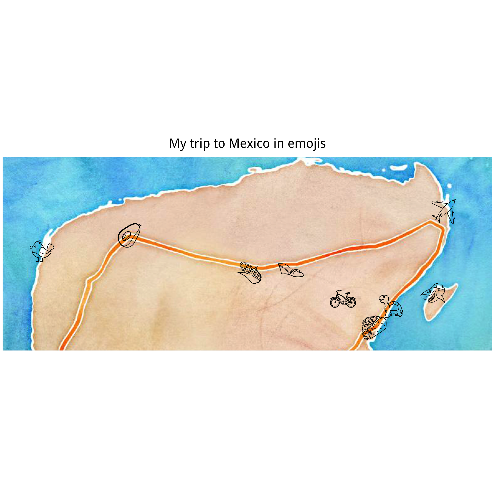

The code that never really worked
This post is the result of hours and hours of me trying to write some code but never getting it quite right. I think that one of the worst things that you can do to yourself is to be scared to admit that you are struggling because you will end up never trying anything new. That is why I am publishing what I have got so far despite not being very happy with it. (I also think maybe someone reading this will be able to tell me what I am doing wrong). UPDATE: I finally have my emoji map!
I also want to celebrate the things that I did work. I did figure out how to include gifs and emojis in the text! I picked a gif that illustrates what this jetlagged person probably should have done a long time ago 😄. 
(OK I picked it because I love 🐶)
Background
The other day someone asked for some help to make a map and I suggested using R and ggmap. I wanted to share some code and decided to turn it into a blog post.
I just got back from a two week holiday in Mexico. Everywhere we went was so beautiful and everyone was so nice to us (shout out to the people who helped us get more fuel when we were running dangerously low). To remember my lovely holiday I will plot all the places I went to.
I start by getting the background map using get_stamenmap. There are a few different options for the background and I prefer the watercolour option because it makes the map look like a board game. # Getting a map
Getting the data
The next step is to create a list of all the places I went to. I use geocode from ggmap to get the coordinates.
It is always worth looking at your data and as you can see from the min and max of the longitudes and latitudes, all places are close to each other. The first time I ran the geocode command it picked Valladolid in Spain instead of Mexico so it didn’t actually appear on the map when I plotted it. I fixed this by adding “Mexico” to the search string. Ironically I accidentally booked a hotel in Valladolid in Spain instead of Valladolid in Mexico for my holiday and only realised the day before I was going.
broom::tidy(places_coor)
## column n mean sd median trimmed mad min
## 1 place* 9 NaN NA NA NaN NA Inf
## 2 lon 9 -88.1214 1.2183078 -87.73888 -88.1214 1.1755535 -90.39807
## 3 lat 9 20.6622 0.3025031 20.66667 20.6622 0.2876837 20.21237
## max range skew kurtosis se
## 1 -Inf -Inf NA NA NA
## 2 -86.84656 3.55151 -0.6571399 -1.126791 0.4061026
## 3 21.17429 0.96192 0.2151837 -1.305442 0.1008344
To make the map more fun I decided to use emoji instead of boring old circles. I picked emojis that represent what we did in all the different places (and yes my friends saw a shark!)
label1<-data.frame(label=c(emoji("airplane"),emoji("taco"), emoji("turtle"), emoji("bike"), emoji("sandal"), emoji("corn"),
emoji("bird"), emoji("avocado"), emoji("shark")))
places_coor <- dplyr::bind_cols(label1, places_coor)
Creating the map
This is where things got annoying. It took me a while to get the emojis to actually appear on the map. After a bit of googling I learnt that since I use Rstudio and I have a mac then I need to download “quartz” and include quarts to open a different window. When running this code not in an Rmarkdown file it works just fine (I mean it is still pretty ugly) but as soon as I move it over to Rmarkdown the emojis no longer appear. The png file that I save has the emojis but I can’t figure out how to include it. UPDATE: I realised that I had to save the map in the public folder (in my case “~/Documents/GitHub/bdown/public/2018/03/mexico”)
load.emojifont()
quartz()
map1<-ggmap(yucatan_wc, base_layer=ggplot(data=places_coor, aes(lon, lat, label=label))) +
geom_text(size = 10, x=places_coor$lon, y=places_coor$lat,
vjust = 0.25, family='EmojiOne') + labs(x=NULL, y=NULL) +
ggtitle("My trip to Mexico in emojis") +
theme(axis.title.x=element_blank(),
axis.text.x=element_blank(),
axis.ticks.x=element_blank(),
axis.title.y=element_blank(),
axis.text.y=element_blank(),
axis.ticks.y=element_blank(),
plot.title = element_text(hjust = 0.5),
plot.margin=unit(c(0,0,0,0),"mm"))
ggsave("~/Documents/GitHub/bdown/public/2018/03/mexico/mexico_map.png")
## Saving 7 x 7 in image
My attempt to include the .png file. I feel like this should be fairly straighforward but despite trying trying a few different ways (I deleted some code) it just doesn’t work.
img1_path <- "mexico_map.png"
knitr::include_graphics(img1_path)

Happy gif to go with all of my updates
 # Packages I used
# Packages I used
library(ggmap)
library(emojifont)
library(tidyverse)
library(png)
library(emo)